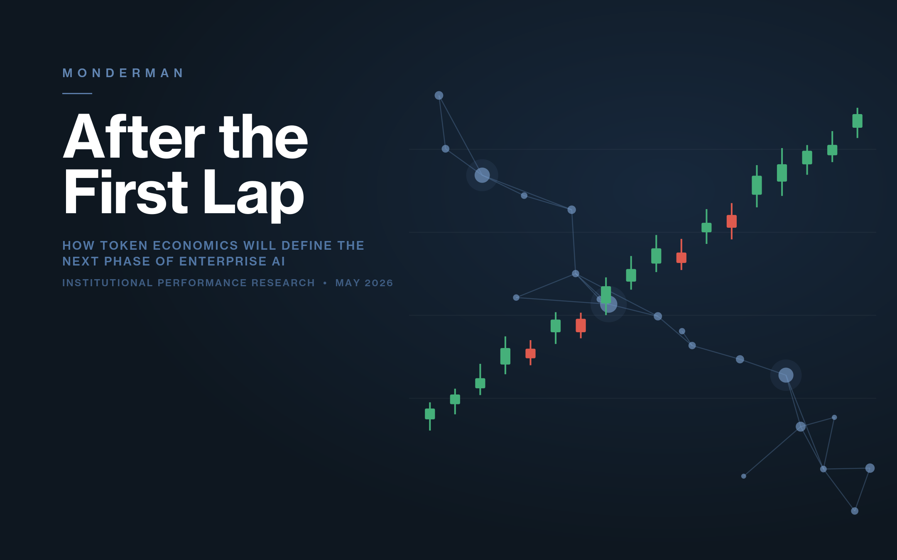

Repeated measurement
Not one-time assessment.
The same instrument, run again after change, is where value compounds. Monderman is built for the second, third, and tenth read.
Organizations deliver at the speed of their administrative reality.
Monderman is a suite of diagnostic instruments that shows how your institution is actually performing — and tracks change over time.
Repeated measurement
The same instrument, run again after change, is where value compounds. Monderman is built for the second, third, and tenth read.
Perspective lenses
Operational, managerial, and senior leader readings of the same reality rarely match perfectly. The divergence is often the signal.
Cross-diagnostic synthesis
Results from the four diagnostics can compose into a broader institutional read, making patterns legible across lenses rather than one score at a time.
Longitudinal governance
One instrument, administered the same way, run after run. Stable scoring, locked question paths, controlled visibility states, and auditable administration across teams and time.
How it works
01
Choose your strongest signal.
Slowness, ambiguity, drag, or drift. Pick the diagnostic that maps to what you're actually feeling inside the organization.
02
Run the diagnostic in your browser.
Take it as a guided interview or a structured survey — about 20–30 minutes either way. Your inputs are handled in confidence — never sold or shared.
03
Receive a read you can act on.
Executive PDF, quantified score, primary structural signal, JSON export. Act on it. Re-run when conditions change.
See it before you commit
Three ways to see what Monderman delivers — and what it’s worth — before you run anything.
A complete diagnostic readout — scores, exposure, and recommendations — exactly as the engine renders it.
View a sample report → Estimate your cost of structural dragHow the engine quantifies administrative burden in your own time, money, and capacity, and models what’s recoverable.
See the ROI logic → Read the platform briefA short, plain-language overview of what the platform is, how it works, and where it fits.
Read the brief →There are three ways to ask what your bureaucracy is costing you. A general AI chatbot gives a thoughtful answer that changes every time you ask. A traditional six-figure study renders a considered judgment — once. Monderman is the third kind: a calibrated instrument, scored deterministically, repeatable on a governance cadence — so the return is verified on the second read instead of asserted on the first.
Current publications and featured work on administrative burden, institutional design, decision velocity, and the hidden conditions Monderman is designed to diagnose under complexity.
See all research →
Defense · Research Brief
A Monderman research brief on accumulated drag, administrative burden, and institutional friction in one of the world’s most complex public institutions.
Download research →
Healthcare · Research Brief
A Monderman brief on quarter-trillion friction, administrative burden, and the structural drag complicating performance in healthcare systems.
Download research →
Featured · Insight
A Monderman insight paper on how token economics will define the next phase of enterprise AI — and why the second wave will be won on cost, not capability.
Download paper →
Perspective · Institutional Performance
Organizations often appear to function because people compensate for structural weakness. Output is preserved, but the underlying system continues to deteriorate.
Read perspective →
Research Brief
Kodak did not fail because it missed technology. It failed because its administrative and decision systems could not adapt.
Download research →Enterprise · Culture
Why culture-first diagnosis mislocates the problem — and why organizations that fix sentiment before structure often fix the wrong thing first.
Download research →Decision-Making · Research Brief
A Monderman research brief on how binary framing collapses decision space and makes institutional options harder to see.
Download research →
Insight
Why institutions rarely fail because complexity appears, and more often fail because it accumulates faster than their structures can absorb.
Read insight →
Insight
Institutions move well when governance, pathways, and role clarity support sound judgment without generating unnecessary drag.
Read insight →Monderman supports both self-serve first reads and more structured conversations about fit, pilots, and platform use.
Some institutions are ready to run a first diagnostic immediately. Others need a more structured conversation about platform fit, support, or how repeated measurement would work in their environment.
Next Step
Or reach out directly at connect@monderman.com →